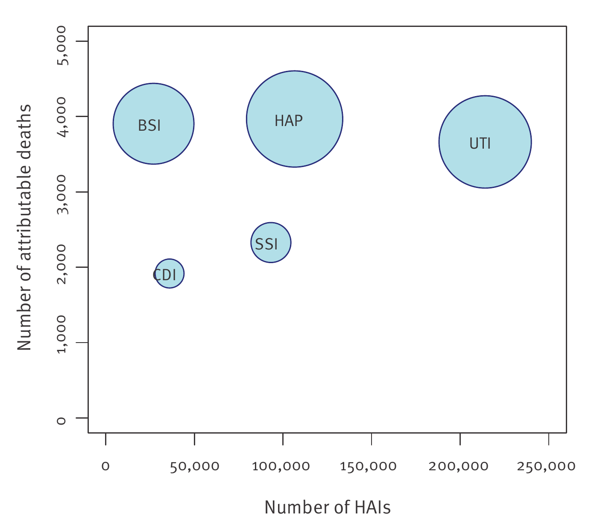

| Infection type | Germany | EU/EEA average |
|---|---|---|
| Pneumonia | 86.1 (42.1–145.1) | 109.8 (55.3–170.5) |
| Urinary tract | 82.6 (34.5–159.2) | 57.1 (24.3–102.9) |
| Bloodstream | 72.2 (38.3–129.0) | 76.2 (52.6–104.8) |
| Surgical site | 35.7 (28.9–43.7) | 35.1 (33.3–36.8) |
| C. difficile | 25.9 (2.5–61.2) | 10.0 (0.9–19.2) |
| All five types | 308.2 (221.2–416.3) | 290.0 (214.9–376.9) |
Are Infection Rates Telling Us the Whole Story?
An infection acquired during hospital care can turn a routine admission into a longer stay, lasting illness or even an early death. Preventing these healthcare-associated infections is an important part of patient safety. But how should we judge the size of the problem: by counting infections, or by measuring the harm they cause?
A lower infection rate sounds reassuring. Yet it does not necessarily mean that less healthy life is lost across a population. Some infections have much more serious consequences than others, and the number of people receiving hospital care also matters.
A study by Zacher et al. (2019) illustrates both points using Germany’s hospital infection data. Its findings suggest that we need to look beyond infection totals to understand which problems cause the greatest harm—and why a country with a relatively low infection rate can still experience a substantial health burden.
Not All Infections Cause the Same Harm
Counting cases tells us how common an infection is. It does not tell us whether that infection leads to a short illness, a lasting disability or an early death.
To capture these differences, researchers use disability-adjusted life years, or DALYs. One DALY represents one year of healthy life lost. The measure combines years lost through premature death with time lived in less than full health, allowing researchers to compare the consequences of different infections.
The contrast is clear in Figure 1. Bloodstream infections and urinary tract infections caused similar estimated numbers of attributable deaths in Germany, even though there were roughly eight times as many urinary tract infections. The number of cases alone therefore gives an incomplete picture of their consequences.

How to read the chart: The horizontal axis shows estimated annual infections and the vertical axis shows attributable deaths in Germany in 2011. Bubble diameter represents DALYs: a wider bubble means more healthy life lost. Bubble area is not proportional to DALYs.
Labels: BSI = bloodstream infection; UTI = urinary tract infection; HAP = hospital-acquired pneumonia; SSI = surgical site infection; CDI = C. difficile infection.
The DALY estimates tell a similar story. Urinary tract infections accounted for approximately 45% of cases but 27% of the estimated health burden. Pneumonia and bloodstream infections together accounted for around 28% of cases but 51% of the burden (Zacher et al. 2019).
This does not make urinary tract infections unimportant: their large number still produces substantial harm. Instead, it shows why prevention priorities should consider severity alongside frequency. A less common infection can cause a disproportionate share of healthy life lost.
Why Germany’s Numbers Tell a Different Story
Severity helps explain why infection types rank differently. However, it is only part of the story. We also need to consider how many people are exposed to hospital care.
The researchers estimated 2.40 infections per 100 hospital patients in Germany, compared with 2.83 across the European Union and European Economic Area (EU/EEA). These are modelled infection incidence estimates, rather than the proportion of patients infected on the survey day.
Despite the lower estimate among hospital patients, Germany’s estimated population burden was higher: 308.2 DALYs per 100,000 people, compared with 290.0 for the EU/EEA average. Table 1 shows the comparison across the five infection types. Urinary tract and C. difficile infections contributed more health loss per head of population in Germany, while pneumonia contributed less (Zacher et al. 2019).
How can these results coexist? The two measures use different denominators. One describes infections among hospital patients; the other describes healthy life lost relative to the whole population.
The authors suggest that Germany’s large hospital patient population helps explain the pattern. A lower infection rate applied to a larger number of hospital stays can still produce substantial harm across the population. This is a plausible explanation for the results, rather than proof that hospital volume alone caused the difference.
How Do Researchers Measure the Harm?
These findings depend on converting a snapshot of hospital infections into estimates of their longer-term consequences.
The original evidence came from the European Centre for Disease Prevention and Control’s point prevalence survey of acute care hospitals in 2011–2012 (European Centre for Disease Prevention and Control 2013). The representative German sample included 9,626 patients in 46 hospitals. The European comparison included 273,753 patients in 1,149 hospitals, covering 29 EU/EEA countries and Croatia (Zacher et al. 2019).
The researchers first used information about hospital stays and infection duration to estimate annual infections from the survey. They then combined those estimates with published probabilities of recovery, disability and death to calculate DALYs.
Their method builds on earlier European research (Cassini et al. 2016) and is implemented in the open-source BHAI R package. Repeating the calculations through 1,000 simulations allowed the researchers to describe uncertainty around their estimates.
The results discussed here are therefore modelled estimates based on survey data and published evidence, rather than a direct count of every infection or every healthy year lost.
What Does This Mean for Hospitals?
The study helps answer the questions raised at the beginning: infection counts are useful, but they cannot fully describe harm.
For prevention teams, this means considering both how often an infection occurs and how serious its consequences are. Decisions also depend on how preventable an infection is and the resources needed to prevent it; DALYs alone do not determine the best intervention.
The Germany–Europe comparison adds another consideration. Alongside hygiene and infection control, the authors argue that reducing avoidable hospital stays could help reduce population exposure to hospital infections. This is an implication for health-system planning, not a reason for patients to avoid necessary treatment.
For readers interpreting a hospital safety headline, the practical questions are simpler: What does the statistic measure, and who does it cover? A rate among hospital patients and a burden per head of the general population answer different questions.
What Should We Be Careful About?
Those questions also need a third: How uncertain is the estimate?
The overall uncertainty intervals in Table 1 overlap substantially. Germany’s estimate ranges from 221.2 to 416.3 DALYs per 100,000 people, while the EU/EEA estimate ranges from 214.9 to 376.9. The higher German point estimate alone does not establish a clear difference between the two populations.
The results also depend on the evidence used to estimate illness and death following infection. The authors describe that underlying literature as sparse and of moderate to low quality. Changing those assumptions could change the estimated burden.
Sample selection matters too. Using a larger German convenience sample increased the estimate from 308.2 to 359.3 DALYs per 100,000, approximately 17%. This illustrates how the hospitals included in a survey can influence the result (Zacher et al. 2019).
Finally, these are historical estimates based on 2011–2012 data. They help explain how infection statistics should be interpreted, but they cannot tell us today’s risk in Germany or in an Australian hospital.
Conclusion
Fewer hospital infections can be good news, but infection counts alone do not tell us how much harm patients experience. Germany’s data illustrates two reasons: infections differ in severity, and the number of hospital stays affects population exposure.
The most common infection is therefore not necessarily the one causing the greatest health loss. Likewise, a lower infection rate among hospital patients does not automatically imply a lower burden across the population.
When reading a hospital safety statistic, ask what it measures, who its denominator includes and how uncertain it is. Understanding those details helps us move from simply counting infections to understanding their consequences.
References
Cassini, Alessandro, Diamantis Plachouras, Tim Eckmanns, et al. 2016. “Burden of Six Healthcare-Associated Infections on European Population Health: Estimating Incidence-Based Disability-Adjusted Life Years Through a Population Prevalence-Based Modelling Study.” PLoS Medicine 13 (10): e1002150. https://doi.org/10.1371/journal.pmed.1002150.
European Centre for Disease Prevention and Control. 2013. Point Prevalence Survey of Healthcare-Associated Infections and Antimicrobial Use in European Acute Care Hospitals. ECDC.
Zacher, Benedikt, Sebastian Haller, Niklas Willrich, et al. 2019. “Application of a New Methodology and R Package Reveals a High Burden of Healthcare-Associated Infections (HAI) in Germany Compared to the Average in the European Union/European Economic Area, 2011 to 2012.” Eurosurveillance 24 (46). https://doi.org/10.2807/1560-7917.ES.2019.24.46.1900135.